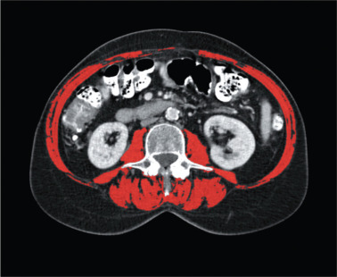

Projects
SigPy is a python framework using CNN based machine-learning methods to analyse gastro-intestinal (GI) electrophysiological data for normal and abnormal activities. The data first undergo preprocessing steps including filtering and normalisation. A set of pre-labelled slow-wave activity is used to train a convolutional neural network (CNN) and SigPy can then apply this CNN onto this new data and automate the identifying abnormal patterns. Once the recordings have labelled the patterns, SigPy enables detailed analyses of slow wave dynamics including through the production of animations displaying the propagation of slow-waves. SigPy also allows exporting of data into a format compatible with the Gastro-intestinal Electrical Mapping Suite (GEMS) MATLAB toolbox to perform other slow wave related analyses. See Sigpy in GitHub |
|
An image processing framework for ICC detection and counting on confocal microscopy ICC imaging data. A general‐purpose image segmentation approach is used, including two feature learning algorithms; multiscale multilayered perceptrons and convolutional neural networks. The output (sematic segmentation) is processed using the watershed segmentation and subsequently circular Hough transform to detect and count individual ICCs. |
|
See ICC recommender engine in GitHub. A pretrained image classification VGG19 DNN network, is used to find indentical images for a given ICC image. The last layers of the network is removed and the dissected model is used to convert the images into feature vectors for similarity comparison to produce closes matching ICC images. Since we are using a pretrained network, no further training is required. In addition to making ICC image recommendation, we can also visualize the image feature vectors by mapping the high-dimensional vectors onto a 2-dimensional manifold using the t-SNE algorithm to get a sense of how "far away" images are from each other. |
|
|  | The project studied the use of U-Net network for segmentation of skeletal muscle cross-sectional area on an axial computed tomography image taken at the third lumbar vertebra. See Sarcopenia segmentation in GitHub |